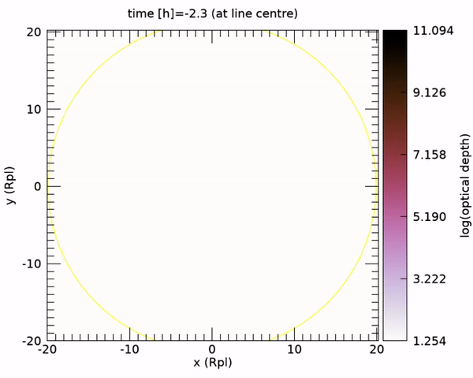
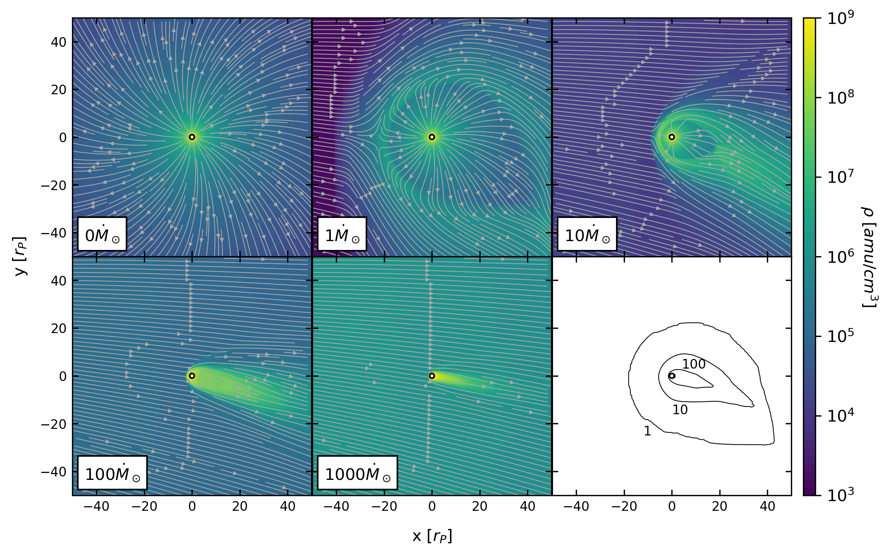

The dichotomy of atmospheric escape in AU mic b
S. Carolan, A. A. Vidotto, P. Plavchan, C. Villarreal D'Angelo, G. Hazra
Here, we study the dichotomy of the escaping atmosphere of the newly discovered close-in exoplanet AU Mic b. On one hand, the high EUV stellar flux is expected to cause a strong atmospheric escape in AU Mic b. On the other hand, the wind of this young star is believed to be very strong, which could reduce or even inhibit the planet's atmospheric escape. AU Mic is thought to have a wind mass-loss rate that is up to 1000 times larger than the solar wind mass-loss rate (Ṁ⊙). We perform 3D hydrodynamics simulations of the stellar wind-planetary atmosphere interactions in the AU Mic system and predict the synthetic Ly-α transits of AU Mic b. We systematically vary the stellar wind mass-loss rate from a `no wind' scenario to up to a stellar wind with a mass-loss rate of 1000Ṁ⊙. We find that, as the stellar wind becomes stronger, the planetary evaporation rate is reduced. With a stronger stellar wind, the atmosphere is forced to occupy a smaller volume, affecting transit signatures. Our predicted Ly-α absorption disappears from the case of "no wind" to barely any Ly-α absorption in the extreme stellar wind scenario. Future Ly-α transits could therefore place constraints not only on the evaporation rate of AU Mic b, but also on the mass-loss rate of its host star.
3D models of atmospheric escape

We adapt SWMF's GM module to perform 3d models of AU mic b's atmospheric escape. The computational grid is centred on the planet, with each hydrodynamic simulation performed in the planet's rest frame. We account for the orbital effects associated with close-in exoplanets, and inject the stellar wind as an outer boundary. We vary the strength of the stellar wind in each simulation from no wind to 1000 Ṁ⊙, obtaining a 3d grid of densities, velocities and thermal pressure.
Syntheic Ly-α Transit models
{kind=link}
To calculate the Ly-α transit profiles, we use the ray tracing technique detailed in
Vidotto et al. (2018).
Stellar rays are shot through the planetary material, which is represented by the volume entailed by the grey surface in the gif above.
We calculate the velocity-dependent optical depth of this material along the line-of-sight and integrate over the all rays that are
transmitted through the atmosphere to obtain the velocity-dependent transit depth.
Results: Variation of Stellar Wind Strength
{kind=link}
We perform five simulations of AU mic b, each with a different stellar wind strength: no wind, 1, 10, 100, and 1000 Ṁ⊙. The orbital slice from each of these can be seen in the figure above. The bottom right panel shows the contour at 1.1 Tplanet. Our simulations are isothermal, so this cutoff allows us to differentiate between the planetary and stellar material.
As the strength of the stellar wind increases, the escaping atmosphere is confined closer to the planet. Eventually, this confinement affects the sonic surface of the outflowing atmosphere, such that material on the day-side no longer accelerates to super-sonic speeds. It is instead funneled towards the comet-like tail. This causes a reducing escape rate as the stellar wind strength is increased.
Given that the absorbing planetary material now occupies a smaller volume around the planet, and the atmospheric escape rate has been reduced, changes in the Ly-α absorption are to be expected. We perform synthetic Ly-α transit calculations on each of our 3d grids obtaining the Ly-α line profiles at mid transit. We ignore the line centre [-36, 36 km/s] given it will be contaminated by interstellar aborption and geocoronal emission, and plot the blue and red wings for each model below.


We integrate the red and blue wings of each Ly-α line profile, obtaining the percentage absorption of each of each wing. The resultant values can be seen in the figure to the left. This allows us to quantify the line asymmetry of the Ly-α line for each stellar wind strength.
For stellar winds ≤ 10 Ṁ⊙, the blue wing shows significantly more absorption than the red wing. The stellar wind funnels day-side material towards the comet-like tail, leading to asymmetry in the line profile.
For stellar winds ≥ 100 Ṁ⊙, we find no significant absorption in the blue or red wing. The stellar wind is now strong enough to confine the outflowing planetary material much closer to the planet, such that the volume occupied by the absorbing hydrogen is greatly reduced. This leads to very little Ly-α absorption.
The results of this work place importance on future Ly-α observations. In the case of AU mic b, we have shown that future Ly-α observations can provide insight into the stellar wind. Should future observations yield a non-detection of AU mic b's escaping atmosphere, then we can place a lower limit on the stellar mass loss rate at 100 Ṁ⊙. Should future observations find significant blue shifted absorption, we can conclude that AU mic has a mass loss rate below this value. Furthermore, we have shown that the strength of the stellar wind can significantly contributes to the resultant Ly-α line profile, and so must be considered when interpreting the Ly-α observations close-in exoplanets.
Further information & Contact details
This work has been submitted the MNRAS letters, with a pre print available here.
We acknowledge funding from the European Research Council (ERC) under the European Union's Horizon 2020 research and innovation programme (grant 817540, ASTROFLOW) and SFI/HEA Irish Centre for High-End Computing (ICHEC) for the provision of computational facilities and support. This work used the BATS-R-US tools developed at the University of Michigan Center for Space Environment Modeling and made available through the NASA Community Coordinated Modeling Center.
-
Email
carolast@tcd.ie -
Previous works
ADS